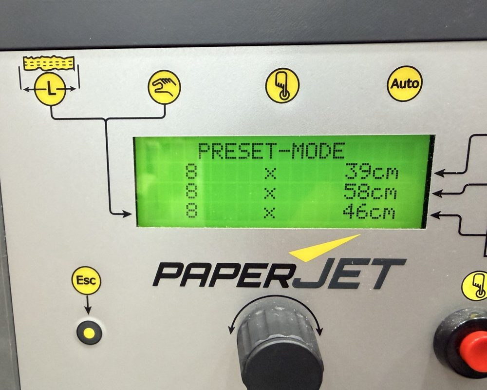
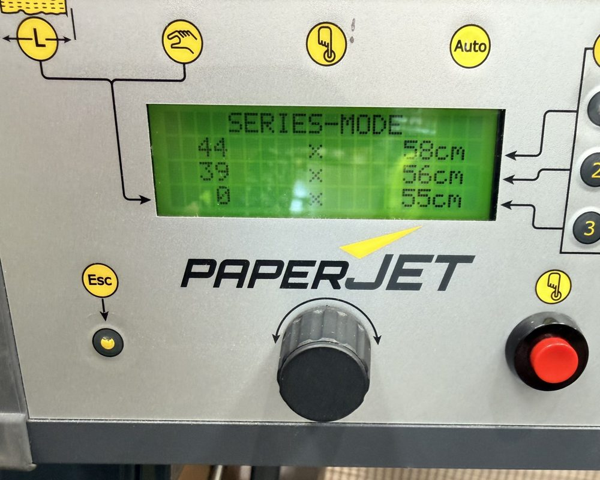

PaperJet control map
Every control on the hand control panel and the machine. Photos from our demo machine.

Our demo machine's control pad.

Series mode: count × length on each row.
- Choose mode
- Turn the knob. The display names the mode, e.g. LENGTH-MODE.
- 1 Length
- One pad of a set length, every press.
- 2 Takeout
- A new pad as soon as the last is taken. Light blinks while on.
- 3 Manual
- Paper runs while you hold. Let go to cut.
- 4 Series
- Up to three lengths, each with a count, from one press.
- 5 Preset
- Three rows, one per key 1, 2, 3 down the right edge.
- Display
- Mode, settings and messages. Service means a service is due.
- Esc
- Cancel in any mode. Ends Takeout and Series.
- Knob
- Turn and push. Chooses modes, sets values.
- Red button
- Starts production. Same as the foot switch.
Setting a value with the knob
- Turn to choose the mode. The display names it.
- Push the knob. The value blinks.
- Turn: slow for ones, faster for tens, fast for hundreds.
- Push to confirm. The next value blinks.
- Last value confirmed: ready to run.
Hold the knob 1 second after a Manual pad to copy its length into Length or Takeout mode.
On the machine
- Rocker switch
- On and off, next to the power socket.
- Manual feed
- Slow feed for loading paper. Stops when released.
- Foot switch
- Press to start, release to stop. Same as the hand button.
- Emergency stop
- Red button. Stops everything. Pull out to reset.
Messages
- Paper build-up
- Clear the paper inside.
- Remove paper
- Clear the cutter, confirm with the knob.
- Power fault
- Off for 10 seconds, back on.